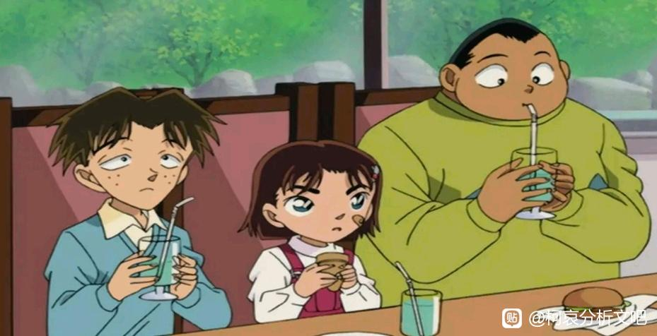

前情提要：
【假设性原则】剧场版在漫画中可能存在的位置与是否进入正史的探讨
之前我简单整理了一次剧场版的正史情况，从内容出发得出了与主流观点稍有不同的结论（例如M12，M15都应该进入正史），这次我们换一个方向，来看另一些介于【原作漫画】和【动画原创】的存在：OVA和特别篇。
OVA和动画原创看似相同，但青山的参与力度非常大，有相当一部分OVA是青山的短篇集改编而来，且柯哀的比重普遍偏高，即使不进入正史，依然能探寻青山的创作思路。
（典型的例子如真人版【与黑衣组织的对决】，这部当然是不可能进入正史的（很多设定都与原著不同），但青山是编剧，里面的柯哀戏份比M26还要厉害，于是具有很高的参考价值）
本次整理包括但不仅包括OVA，一些重要的特别篇（例如史上最糟糕的两天，海老藏篇）也应该进入整理。
小新一镇楼～
【假设性原则】剧场版在漫画中可能存在的位置与是否进入正史的探讨
之前我简单整理了一次剧场版的正史情况，从内容出发得出了与主流观点稍有不同的结论（例如M12，M15都应该进入正史），这次我们换一个方向，来看另一些介于【原作漫画】和【动画原创】的存在：OVA和特别篇。
OVA和动画原创看似相同，但青山的参与力度非常大，有相当一部分OVA是青山的短篇集改编而来，且柯哀的比重普遍偏高，即使不进入正史，依然能探寻青山的创作思路。
（典型的例子如真人版【与黑衣组织的对决】，这部当然是不可能进入正史的（很多设定都与原著不同），但青山是编剧，里面的柯哀戏份比M26还要厉害，于是具有很高的参考价值）
本次整理包括但不仅包括OVA，一些重要的特别篇（例如史上最糟糕的两天，海老藏篇）也应该进入整理。
小新一镇楼～
1、彷徨的红蝴蝶
正史情况：全部计入
工藤新一出生前的故事，优作一开始推理错有希子的暗号，来到了一个错误的地点（即危命复活时小兰大吃特吃的饭店），但最后他找对了，与有希子在电影院相会。
话说柯南也有被小哀的暗号难倒的时候呢。
正史情况：全部计入
工藤新一出生前的故事，优作一开始推理错有希子的暗号，来到了一个错误的地点（即危命复活时小兰大吃特吃的饭店），但最后他找对了，与有希子在电影院相会。
话说柯南也有被小哀的暗号难倒的时候呢。
2、飞上天空的十颗行星
正史情况：全部进入
攻守互换，轮到优作给有希子暗号，有希子带着1岁话都不会说的小新一找到了优作。
（所以M9和M17非常尴尬，强行给柯南一个“能找到小兰”的设定，但青山从来没有给新兰这种剧情，倒是优希/柯哀能够互相找到）
这两篇都算是青山的原著，进入正史是没有问题的。
正史情况：全部进入
攻守互换，轮到优作给有希子暗号，有希子带着1岁话都不会说的小新一找到了优作。
（所以M9和M17非常尴尬，强行给柯南一个“能找到小兰”的设定，但青山从来没有给新兰这种剧情，倒是优希/柯哀能够互相找到）
这两篇都算是青山的原著，进入正史是没有问题的。
2024-04-18 08:09 | 平者深黑:这篇为什么能算青山原著？我一直没找到证据2024-04-18 08:15 | 🌐之徙:回复 平者深黑 :青山刚昌短篇集，都是他自己画的能不算原著吗？2024-04-18 09:59 | 贴吧用户_0Q8721R:回复 🌐之徙 :魔快跟名柯并线了，也不等于柯南会遇上红子。不能因为都是青山刚昌画的就认为一定可以并入。2024-04-18 10:25 | 平者深黑:回复 🌐之徙 :你可以去看一下青山刚昌短篇集的漫画，彷徨的红蝴蝶男主是北方优作，女主是一个黑色短发的女生。而飞上夜空的十颗行星没有对应漫画，属于动画原创2024-04-18 10:35 | 🌐之徙:回复 平者深黑 :你说得没错，是我先入为主了。 不过我认为是可以进入正史的，这两部动画都以青山本人的名字发布，他的参与似乎也较多。 （飞上夜空的十颗行星确实没有在漫画中出现，我也没找到编剧是谁，但它应该是和正史适配的）2024-04-18 10:39 | 🌐之徙:回复 贴吧用户_0Q8721R :我主要考虑两点吧，一是剧情上是否适配，有无矛盾，能不能在主时间轴找到位置；二是青山本人的参与度。 这两部虽然算“漫改”或“原创”，但却是青山自己选的，参与度应该是很高的。2024-04-18 11:26 | 平者深黑:名字在标题里也不一定代表本人的参与度，青山刚昌还挂名“青山刚昌故乡馆”呢，故乡馆的一些操作也不能代表青山本人2024-04-18 11:40 | 🌐之徙:回复 平者深黑 :不过确实有查到，出短篇集1时，青山在自己的若干短篇里选了三篇动画化（可以推测短篇集2也差不多），非要说他本人没参与肯定不对，只是我个人倾向于参与较多，和名柯对应性非常强。
OVA1、柯南VS基德VS铁剑
正史情况：全部不进入
本身这是基德VS铁剑的番外，柯南又乱入进来，于是全篇都变得一片混乱，最后只好说这是柯南看剑勇传说看入迷了乱做梦。
然而设定上还是不对，柯南梦到了红子，以为白干还有效，这都是不柯学的事情，且如此大乱斗的梦境里，柯南居然没有梦到小哀吗？
该作发行于2000年（小哀已经登场），非要说的话只能是红子对柯南做了心理暗示，导致他胡乱做梦。
正史情况：全部不进入
本身这是基德VS铁剑的番外，柯南又乱入进来，于是全篇都变得一片混乱，最后只好说这是柯南看剑勇传说看入迷了乱做梦。
然而设定上还是不对，柯南梦到了红子，以为白干还有效，这都是不柯学的事情，且如此大乱斗的梦境里，柯南居然没有梦到小哀吗？
该作发行于2000年（小哀已经登场），非要说的话只能是红子对柯南做了心理暗示，导致他胡乱做梦。
OVA2 16名嫌疑犯
正史情况：全部不进入
OVA2最显著的特点是高佐白三角继续存在，因此就只能发生在【本厅4】（白佐相亲）之前，而园子已经认识平和，因此为危命后，这样时间线上还是勉强可行的。考虑到兰哀见面，设定在网中迷后会更好。
但OVA2还是出现了一些问题，首先园子OOC十分严重，居然下手偷酒，据说是为了测试白鸟是否真懂酒 以园子的性格根本不可能做这个事情，同时OVA还创造了“新一的双亲带小兰来过这个庄园”的奇妙说法，听起来就很奇怪，因为柯南是在这一年才见到白鸟的。
以园子的性格根本不可能做这个事情，同时OVA还创造了“新一的双亲带小兰来过这个庄园”的奇妙说法，听起来就很奇怪，因为柯南是在这一年才见到白鸟的。
还有一个相对叫小的问题，漫画里服部从来不撮合新兰，本案服部的行动也是奇怪的。
OVA2也并非无不可取之处，当服部邀请柯兰去玩时，柯南下意识邀请了小哀 非常符合山本风格的柯哀互动，小哀直接“pass”。最后柯南也没真的和小兰有什么回忆，反而更多地感谢服部，至少柯南的人设是没有崩的，还是可以当成特定环境的同人来看。
非常符合山本风格的柯哀互动，小哀直接“pass”。最后柯南也没真的和小兰有什么回忆，反而更多地感谢服部，至少柯南的人设是没有崩的，还是可以当成特定环境的同人来看。
正史情况：全部不进入
OVA2最显著的特点是高佐白三角继续存在，因此就只能发生在【本厅4】（白佐相亲）之前，而园子已经认识平和，因此为危命后，这样时间线上还是勉强可行的。考虑到兰哀见面，设定在网中迷后会更好。
但OVA2还是出现了一些问题，首先园子OOC十分严重，居然下手偷酒，据说是为了测试白鸟是否真懂酒
以园子的性格根本不可能做这个事情，同时OVA还创造了“新一的双亲带小兰来过这个庄园”的奇妙说法，听起来就很奇怪，因为柯南是在这一年才见到白鸟的。还有一个相对叫小的问题，漫画里服部从来不撮合新兰，本案服部的行动也是奇怪的。
OVA2也并非无不可取之处，当服部邀请柯兰去玩时，柯南下意识邀请了小哀
非常符合山本风格的柯哀互动，小哀直接“pass”。最后柯南也没真的和小兰有什么回忆，反而更多地感谢服部，至少柯南的人设是没有崩的，还是可以当成特定环境的同人来看。
OVA3 消失的少年
正史情况：全部不进入
非常扯的一部，原创了关西三小只，搞得好像三小只是什么配套侦探的复制人一样，非常俗套。
而且服部正片是见过正牌三小只的，关西三小只真是一点道理都没有，更无法插入任何主时间轴中。
（甚至柯南去了一趟关西，回头给正版三小只人名都念错了 ）
）
正史情况：全部不进入
非常扯的一部，原创了关西三小只，搞得好像三小只是什么配套侦探的复制人一样，非常俗套。
而且服部正片是见过正牌三小只的，关西三小只真是一点道理都没有，更无法插入任何主时间轴中。
（甚至柯南去了一趟关西，回头给正版三小只人名都念错了
）

OVA4 水晶之母
正史情况：删除柯南后进入基德正史
本身这就是一个完整的故事了，强行让柯南乱入造成了不少问题，尤其是车里还是“英国女王”，这么玩伦敦篇要出大问题的。
正史情况：删除柯南后进入基德正史
本身这就是一个完整的故事了，强行让柯南乱入造成了不少问题，尤其是车里还是“英国女王”，这么玩伦敦篇要出大问题的。
OVA5 目标是小五郎！少年侦探团的秘密调查
正史情况：可以进入正史，有一定必要性
OVA5似乎是和M9配合行动的，两部作品的小五郎水平都很高，但是相比M9，OVA5得以绕过新兰问题，专注于描写小五郎偶尔高光的表现，其实比尴尬的M9好得多。
本案柯哀非常好磕，完全符合这一时期的柯哀关系，漫画同期大概为“神社鸟居惊人暗号”，都是对三小只进行能力训练的一部分，可谓相辅相成（之后少侦很少再莽夫了）
正史情况：可以进入正史，有一定必要性
OVA5似乎是和M9配合行动的，两部作品的小五郎水平都很高，但是相比M9，OVA5得以绕过新兰问题，专注于描写小五郎偶尔高光的表现，其实比尴尬的M9好得多。
本案柯哀非常好磕，完全符合这一时期的柯哀关系，漫画同期大概为“神社鸟居惊人暗号”，都是对三小只进行能力训练的一部分，可谓相辅相成（之后少侦很少再莽夫了）
OVA6 追踪消失的钻石
正史情况：全部不进入
这篇非常离谱，柯南忘记自己身上有变声器，基德甚至忘记还宝石，也就和叶稍微正常一点别的都不太能看（犯人声音和服部像，但和叶可不觉得服部是犯人，只是故意调侃他而已，对比死罗神的某人……）
这篇还极力渲染小兰买菜的辛苦和小五郎家的贫穷（以至于要节省伙食费），一看就不像是毛利家能干出来的事情，他们日常都是花钱大手大脚的。
关键渲染完小兰的辛苦后，也没有后续了柯南内心波动甚小。
正史情况：全部不进入
这篇非常离谱，柯南忘记自己身上有变声器，基德甚至忘记还宝石，也就和叶稍微正常一点别的都不太能看（犯人声音和服部像，但和叶可不觉得服部是犯人，只是故意调侃他而已，对比死罗神的某人……）
这篇还极力渲染小兰买菜的辛苦和小五郎家的贫穷（以至于要节省伙食费），一看就不像是毛利家能干出来的事情，他们日常都是花钱大手大脚的。
关键渲染完小兰的辛苦后，也没有后续了
柯南内心波动甚小。
码
OVA7 来自阿笠的挑战书！阿笠VS柯南&少年侦探团
正史情况：可以进入正史，有一定必要性
博士弄了个连环谜题给少侦猜，具体剧情和OVA5颇为相似，而且也确实是博士能整出来的活。
同期漫画为元太的必杀射门，依然是柯爸哀妈带孩子的剧情，与本案比较融洽。螺旋暗号后来还在骸骨篇再次登场，确实是个不错的点子。
哀：要不要告诉他们圆规的事情？
柯：不，再等等吧。
（光彦摸出圆规，柯哀露出了欣慰的表情）
本篇柯哀非常好磕，编剧似乎是青山本人。
正史情况：可以进入正史，有一定必要性
博士弄了个连环谜题给少侦猜，具体剧情和OVA5颇为相似，而且也确实是博士能整出来的活。
同期漫画为元太的必杀射门，依然是柯爸哀妈带孩子的剧情，与本案比较融洽。螺旋暗号后来还在骸骨篇再次登场，确实是个不错的点子。
哀：要不要告诉他们圆规的事情？
柯：不，再等等吧。
（光彦摸出圆规，柯哀露出了欣慰的表情）
本篇柯哀非常好磕，编剧似乎是青山本人。
OVA8 女子高中生侦探 铃木园子事件簿
正史情况：可以进入正史，有一定必要性
OVA8联动M12，都在唱奇异恩典，而且剧情非常符合原著。
（山本导演古内编剧，我认为本篇古内已经生锈，就这剧情对小兰不友好到了极点）
剧情是园子准备弄个侦探剧本，但想不到好的手法于是求助于少侦，少侦自然天马行空不切实际，最后柯南以新一身份给了一个非常古内风格的剧本，重点来了：
【这个剧本是柯南设计，却是由小兰说出来的】
于是小兰为这个剧本增加了破案后新一留在自己身边的桥段，听起来像是新一自己想留下来一样（而事实上是不可能的），最后又自己加了一段空手道暴力打戏（这场戏是在某个教堂里演的，神父们直接没眼看），我都怀疑这是不是在清算儿玉，因为儿玉也是这个套路，让柯南变成恋爱脑，给小兰加打戏。
本篇同样有柯哀糖，默契度拉满了。
正史情况：可以进入正史，有一定必要性
OVA8联动M12，都在唱奇异恩典，而且剧情非常符合原著。
（山本导演古内编剧，我认为本篇古内已经生锈，就这剧情对小兰不友好到了极点）
剧情是园子准备弄个侦探剧本，但想不到好的手法于是求助于少侦，少侦自然天马行空不切实际，最后柯南以新一身份给了一个非常古内风格的剧本，重点来了：
【这个剧本是柯南设计，却是由小兰说出来的】
于是小兰为这个剧本增加了破案后新一留在自己身边的桥段，听起来像是新一自己想留下来一样（而事实上是不可能的），最后又自己加了一段空手道暴力打戏（这场戏是在某个教堂里演的，神父们直接没眼看），我都怀疑这是不是在清算儿玉，因为儿玉也是这个套路，让柯南变成恋爱脑，给小兰加打戏。
本篇同样有柯哀糖，默契度拉满了。
2024-04-18 10:01 | 贴吧用户_0Q8721R:M12确实有机会，因为名柯也提到了奇异恩典。
OVA9 十年后的陌生人
这位更是重量级，进入正史的可能性不能说没有，但是微乎其微。
倒不是说本案新兰线有问题，其实问题真不大，主要是我认为小哀不太可能让柯南去试药，不如认为整件事都是柯南的梦境。
柯南感知不到新出和小光的感情，于是梦境中将新出作为假对象（他大概认为小兰更喜欢新出，其实未必）；梦境中的新一和小哀相处得还是那么亲密，小哀也亳不反抗，这是柯南代入了他平时和小哀相处的情况；
当然还有更多的细节，例如柯南无法想象平和结婚，认为洋子会像母亲一样隐退，不知道大叔变老会怎么样等等，这些都非常符合逻辑（古内还是强的），因此，最终的结局并不是小兰替柯南带上了眼镜，而是柯南自己带上了眼镜。
（OVA9的时间线在死罗神之后，大约与M13同期，这样敏感的时间点，柯南的潜意识已经做出选择了，成为柯南而不是新一）
这位更是重量级，进入正史的可能性不能说没有，但是微乎其微。
倒不是说本案新兰线有问题，其实问题真不大，主要是我认为小哀不太可能让柯南去试药，不如认为整件事都是柯南的梦境。
柯南感知不到新出和小光的感情，于是梦境中将新出作为假对象（他大概认为小兰更喜欢新出，其实未必）；梦境中的新一和小哀相处得还是那么亲密，小哀也亳不反抗，这是柯南代入了他平时和小哀相处的情况；
当然还有更多的细节，例如柯南无法想象平和结婚，认为洋子会像母亲一样隐退，不知道大叔变老会怎么样等等，这些都非常符合逻辑（古内还是强的），因此，最终的结局并不是小兰替柯南带上了眼镜，而是柯南自己带上了眼镜。
（OVA9的时间线在死罗神之后，大约与M13同期，这样敏感的时间点，柯南的潜意识已经做出选择了，成为柯南而不是新一）
2024-04-18 15:21 | 成冰的雨点:就是这篇OVA，被伪装公正的偏执SR强行解释为“天使lan真的等了新一十年，好可怜，新一不找别人就是浪费天使lan青春的渣男，73要改官配就是恶臭的yy”2024-04-21 09:45 | 随意♬飘荡:回复 成冰的雨点 :小兰和新出的进展都到结婚了，这是哪门子的等待了十年啊，可怜新出就这样被当成备胎，最后还直接被踢开了2024-04-21 15:16 | 成冰的雨点:回复 随意♬飘荡 :所以说SR不动脑子自以为处处是理呢，除了它们的天使lan外几乎没把别人当人2024-05-04 12:08 | -Juliet:我还挺喜欢的，因为有罕见的新志同框2024-05-05 17:29 | 剑锋寒光:这个我当糖磕的，因为去挽留小兰的是穿越过来的十年前的柯南，而真正的该时间线里的柯南早就放弃了
OVA10 怪盗基德海岛决战
正史情况：基本不太能进入正史
又名“基德带娃记”，时间线与M14差不多，问题是基德早就见过孩子们了（奇异屋宇大冒险），这莫名其妙就被孩子们打动了可还行，其实不太符合基德的人设。
而且不知为何出现了动画组通病，只出三小只不出小哀，这种情况在漫画中出现的次数为0，可以直接视为OOC。
让我看看导演是谁……居然是儿玉，怪不得感觉怪怪的，小兰全程就在那美美的玩，柯南和三小只全程涉险，确实是儿玉的风格。
正史情况：基本不太能进入正史
又名“基德带娃记”，时间线与M14差不多，问题是基德早就见过孩子们了（奇异屋宇大冒险），这莫名其妙就被孩子们打动了可还行，其实不太符合基德的人设。
而且不知为何出现了动画组通病，只出三小只不出小哀，这种情况在漫画中出现的次数为0，可以直接视为OOC。
让我看看导演是谁……居然是儿玉，怪不得感觉怪怪的，小兰全程就在那美美的玩，柯南和三小只全程涉险，确实是儿玉的风格。
OVA11 来自伦敦的绝密指令
正史情况：完全进入正史
这部OVA时间十分明确，就是伦敦篇第一天的故事，住在步美家的小哀和少侦进行的大冒险，顺便公布了小哀最喜欢吃的蓝莓花生酱三明治。
小哀对猫哥的态度大概经历了【非常害怕】到【这人好烦】的过渡，OVA11也是其中的一环，之后小哀就能接受坐猫哥的车了。
可能有人会认为如果真的有童星像小哀，会不会对主线产生影响，其实显然是不会的，原著中高年级也有一位茶发的小学生（和小哀很像），无非是M26琴酒骂人脸系统骂得更起劲了而已。
（小哀又一次察觉了光彦的箭头，于是故意把光彦的三明治做得太甜让他受不了，光彦太惨了）
正史情况：完全进入正史
这部OVA时间十分明确，就是伦敦篇第一天的故事，住在步美家的小哀和少侦进行的大冒险，顺便公布了小哀最喜欢吃的蓝莓花生酱三明治。
小哀对猫哥的态度大概经历了【非常害怕】到【这人好烦】的过渡，OVA11也是其中的一环，之后小哀就能接受坐猫哥的车了。
可能有人会认为如果真的有童星像小哀，会不会对主线产生影响，其实显然是不会的，原著中高年级也有一位茶发的小学生（和小哀很像），无非是M26琴酒骂人脸系统骂得更起劲了而已。
（小哀又一次察觉了光彦的箭头，于是故意把光彦的三明治做得太甜让他受不了，光彦太惨了）
2024-04-18 10:03 | 贴吧用户_0Q8721R:这个进正史的原因是什么呢？2024-04-18 10:45 | 🌐之徙:回复 贴吧用户_0Q8721R :原著小哀对猫哥有一个放下警惕的过程，OVA11应该会起到一些作用。 此前的一角岩，小哀话都很难说出来，但伦敦篇后的地震案，小哀却能够质问猫哥“简直像在窃听一样”。如果补上伦敦篇小哀与猫哥的日常，则转变会更加合理。
OVA12 传说中的球棒的奇迹
正史情况：完全进入正史
编剧是青山+古内，必须进入正史，时间线在M16左右，也就是拉窗帘附近，这一时期小哀一方面是柯南最靠谱的搭档，另一方面也相当调皮，地震时直接抱住柯南，不听柯南的话非要“深入狼穴”，属于是被柯南惯坏了。
OVA12完美展示了这一点，小哀抽到的“大吉”签却是【即使不需要刻意表现，幸福也会自动向你走过来的！】，那么如果再加上一点点小哀的主动，柯南就直接把小哀扑倒了。
本案的这位女棒球运动员是青山短篇集的人物，青梅不理解她的追求但天降理解她，影射的部分也拉满了。
正史情况：完全进入正史
编剧是青山+古内，必须进入正史，时间线在M16左右，也就是拉窗帘附近，这一时期小哀一方面是柯南最靠谱的搭档，另一方面也相当调皮，地震时直接抱住柯南，不听柯南的话非要“深入狼穴”，属于是被柯南惯坏了。
OVA12完美展示了这一点，小哀抽到的“大吉”签却是【即使不需要刻意表现，幸福也会自动向你走过来的！】，那么如果再加上一点点小哀的主动，柯南就直接把小哀扑倒了。
本案的这位女棒球运动员是青山短篇集的人物，青梅不理解她的追求但天降理解她，影射的部分也拉满了。
2024-04-18 10:04 | 贴吧用户_0Q8721R:啊？这个也和青山刚昌短篇集里的故事有关，但是为什么就“必须进入正史”了？2024-05-05 17:00 | 随意♬飘荡:这个ova计入正史的话可太猛了，小哀第一次主动改变自己的恋爱运势，还有最后＂新恋情的开始＂也暗示柯哀了。2024-05-05 21:17 | 🌐之徙:回复 贴吧用户_0Q8721R :1、编剧是青山+古内，一般来讲古内主要负责的都是推理剧情的部分，柯哀感情线极有可能是青山搞的。 2、与漫画非常相容，同期漫画“紧急事态252”“和歌纸牌千钧一发”等等小哀都相当顽皮（漫画没有说小哀顽皮的原因）

接下来是一些其他内容：
基德VS新一的钟楼案，进入正史，否则基德不容易知道柯南是新一。
M12特典在另一个帖子说过了，进入正史，体现了新兰的根本矛盾。
M13特典麻将七夕牌，进入正史，新兰照片被剪断。
M14特典紧跟着天空遇难船剧情，由于M14本身是进入正史的，因此特典也跟着进（特典本身属于常见的平和糖）
M15特典进入正史，小兰猫头鹰礼物没有送到。
M16特典九号半之花，算是唯一一部对新兰比较友好的特典，讲述新一过去踢足球的故事，应该是进入正史的（新一确实见到了比护和他哥），小兰由于没开窍所以并不干涉，但她对足球的兴趣连园子都不如。
有些特典的故事比正片都精彩。
基德VS新一的钟楼案，进入正史，否则基德不容易知道柯南是新一。
M12特典在另一个帖子说过了，进入正史，体现了新兰的根本矛盾。
M13特典麻将七夕牌，进入正史，新兰照片被剪断。
M14特典紧跟着天空遇难船剧情，由于M14本身是进入正史的，因此特典也跟着进（特典本身属于常见的平和糖）
M15特典进入正史，小兰猫头鹰礼物没有送到。
M16特典九号半之花，算是唯一一部对新兰比较友好的特典，讲述新一过去踢足球的故事，应该是进入正史的（新一确实见到了比护和他哥），小兰由于没开窍所以并不干涉，但她对足球的兴趣连园子都不如。
有些特典的故事比正片都精彩。
又出新篇了，蹲～
特番1（最糟糕的两天）
正史情况：可以进入正史，有一定必要性
时间线介于M18狙击手和M19向日葵中间，大概是“招财三色猫”事件，这一时期不知为何，既没有新兰线也没有柯哀线，直到M19时期才出了水族馆和风筝篇两篇重要感情线。
如果说风筝篇的小哀主动倾向可以用M19解释，那么水族馆篇柯南当着小兰的面和小哀互动就缺乏过渡了，《最糟糕的两天》恰好可以补上这一点。
本作的人物塑造得到了青山的肯定，包括怒气冲冲对着博士没礼貌的小兰，排斥小兰的小哀（完全否定了“哀是新兰党”的言论）也非常符合原著，虽然是联动篇却有正片的水准。
（有些人对小兰的“摘桃”表示不满，我个人认为相比《穷途末路黑暗中的柯南》或《消失在悬崖上的柯南》等经典摘桃戏，本篇其实塑造得并不差，柯南最后感谢的仍然是哀）
正史情况：可以进入正史，有一定必要性
时间线介于M18狙击手和M19向日葵中间，大概是“招财三色猫”事件，这一时期不知为何，既没有新兰线也没有柯哀线，直到M19时期才出了水族馆和风筝篇两篇重要感情线。
如果说风筝篇的小哀主动倾向可以用M19解释，那么水族馆篇柯南当着小兰的面和小哀互动就缺乏过渡了，《最糟糕的两天》恰好可以补上这一点。
本作的人物塑造得到了青山的肯定，包括怒气冲冲对着博士没礼貌的小兰，排斥小兰的小哀（完全否定了“哀是新兰党”的言论）也非常符合原著，虽然是联动篇却有正片的水准。
（有些人对小兰的“摘桃”表示不满，我个人认为相比《穷途末路黑暗中的柯南》或《消失在悬崖上的柯南》等经典摘桃戏，本篇其实塑造得并不差，柯南最后感谢的仍然是哀）
特番2（真第一集）
正史情况：绝大部分进入正史
真第一集大家都不陌生，由于是青山全面监制，因此绝大部分进入正史。
为什么不是全部进入正史呢？我认为当真第一集与漫画冲突时，仍应以漫画为准，例如小兰是主动停留在原地，而根本没有什么鞋带的事情（鞋带得到保留很可能是为了照顾早期动画），此外新一应该很久没见到英理了，让英理进入小兰空手道大赛的观众席恐怕不那么合适。
此外真第一集保留了M4水池场面，捂脸可乐也被改到多罗碧加（漫画为东京铁塔），这些剧情不太重要，严谨来说应该不能算正史（因为M4不算）
正史情况：绝大部分进入正史
真第一集大家都不陌生，由于是青山全面监制，因此绝大部分进入正史。
为什么不是全部进入正史呢？我认为当真第一集与漫画冲突时，仍应以漫画为准，例如小兰是主动停留在原地，而根本没有什么鞋带的事情（鞋带得到保留很可能是为了照顾早期动画），此外新一应该很久没见到英理了，让英理进入小兰空手道大赛的观众席恐怕不那么合适。
此外真第一集保留了M4水池场面，捂脸可乐也被改到多罗碧加（漫画为东京铁塔），这些剧情不太重要，严谨来说应该不能算正史（因为M4不算）
2024-04-19 11:13 | 贴吧用户_aQPEAAN:真第一集可以当作重制版
两部鲁邦联动
正史情况：显然不能进入正史
且不说鲁邦一伙的世界观问题，两部小兰的人设都与原著都存在巨大差异，尤其第二部小兰更是语出惊人，表示不能让别人陷入危险，结果漫画里窗帘一拉直接回旋镖。第一部小兰深处陌生环境镇定自若，也完全与原著不同。
唯一有效的剧情是小哀和峰不二子的对手戏，算是对A药侧面的一个描写，某种意义上小哀对A药的态度算是正史的一部分。
正史情况：显然不能进入正史
且不说鲁邦一伙的世界观问题，两部小兰的人设都与原著都存在巨大差异，尤其第二部小兰更是语出惊人，表示不能让别人陷入危险，结果漫画里窗帘一拉直接回旋镖。第一部小兰深处陌生环境镇定自若，也完全与原著不同。
唯一有效的剧情是小哀和峰不二子的对手戏，算是对A药侧面的一个描写，某种意义上小哀对A药的态度算是正史的一部分。
鹦鹉等人编剧的电影联动系列
从M17开始，每部剧场版会有一集联动原创，大部分都是鹦鹉的编剧，也有其他人的作品。这些集数大多挂着“联动”的名头，其实并无联动内容，因此绝大部分都是不能算正史的。
M17联动 老店消失的日式甜点
经典少侦出门不带哀，一般而言可以直接pass掉正史可能。
M18联动 有暗号的邀请函
少侦一起点燃烟花的剧情与M18联动（M18算正史）
M19联动 消失的蒙克的呐喊
虽然M19是正史，但这个联动不行，工藤新一居然公然用声音破案，且在小兰面前指挥了小哀，这会造成严重的剧情冲突。
M20联动 悄悄逼近安室的黑影
纯美食番，应该计入《零的日常》正史而不是名柯正史。
M21联动 消失的黑带之谜
M21本身也不是完全进正史，联动篇仅介绍了园子感冒的原因，至于案件可以无视。
M22联动 蛋糕融化了
M22与M17类似，都是鹦鹉整出来的一团乱麻，其联动不能进正史。
M23联动 美食广场的阴谋
由于M23进正史了，三小只自然放飞自我，这段剧情也可以进入正史。
M24联动 米花商业街的垃圾之谜
不愧是鹦鹉，给小兰增加了设计师的身份，又让柯哀一起赞美小兰，至于猫哥更是窃听设备被园子搜到，人物那是相当离谱，只好不进入正史了。
M25联动 会飞的万圣夜南瓜
和M25一点关系都没有，不进入正史
M26联动 对准灰原的摄像头
与M26强相关，人物也没有什么OOC之处，应该进入正史。
M27联动 失去的宝物之谜
似乎和M27正片关系不大，很可能不进入正史
从M17开始，每部剧场版会有一集联动原创，大部分都是鹦鹉的编剧，也有其他人的作品。这些集数大多挂着“联动”的名头，其实并无联动内容，因此绝大部分都是不能算正史的。
M17联动 老店消失的日式甜点
经典少侦出门不带哀，一般而言可以直接pass掉正史可能。
M18联动 有暗号的邀请函
少侦一起点燃烟花的剧情与M18联动（M18算正史）
M19联动 消失的蒙克的呐喊
虽然M19是正史，但这个联动不行，工藤新一居然公然用声音破案，且在小兰面前指挥了小哀，这会造成严重的剧情冲突。
M20联动 悄悄逼近安室的黑影
纯美食番，应该计入《零的日常》正史而不是名柯正史。
M21联动 消失的黑带之谜
M21本身也不是完全进正史，联动篇仅介绍了园子感冒的原因，至于案件可以无视。
M22联动 蛋糕融化了
M22与M17类似，都是鹦鹉整出来的一团乱麻，其联动不能进正史。
M23联动 美食广场的阴谋
由于M23进正史了，三小只自然放飞自我，这段剧情也可以进入正史。
M24联动 米花商业街的垃圾之谜
不愧是鹦鹉，给小兰增加了设计师的身份，又让柯哀一起赞美小兰，至于猫哥更是窃听设备被园子搜到，人物那是相当离谱，只好不进入正史了。
M25联动 会飞的万圣夜南瓜
和M25一点关系都没有，不进入正史
M26联动 对准灰原的摄像头
与M26强相关，人物也没有什么OOC之处，应该进入正史。
M27联动 失去的宝物之谜
似乎和M27正片关系不大，很可能不进入正史
2024-04-20 03:11 | 成冰的雨点:老店消失的日式甜点里，天使lan为了一口吃的奋勇打爹，让人分不清这集是为了尽量降低哀的形象还是在暗搓搓黑天使lan2024-05-04 09:54 | proyekt_rot:回复 🌐之徙 :m20的评论没绷住

三大摘桃篇
海老藏，黑暗中的柯南，消失在悬崖的柯南
这三部剧情非常雷同，柯南遇险+小哀救援+小兰摘桃，从正统上讲海老藏为联动最高，黑暗中的柯南为过年次之，悬崖为纯原创最差。
三部作品均难以进入正史，不过海老藏影响力很大，柯哀剧情也相当可靠（毕竟M26已经共享耳机了，海老藏过渡一下也蛮不错的）
海老藏，黑暗中的柯南，消失在悬崖的柯南
这三部剧情非常雷同，柯南遇险+小哀救援+小兰摘桃，从正统上讲海老藏为联动最高，黑暗中的柯南为过年次之，悬崖为纯原创最差。
三部作品均难以进入正史，不过海老藏影响力很大，柯哀剧情也相当可靠（毕竟M26已经共享耳机了，海老藏过渡一下也蛮不错的）
2024-04-20 03:12 | 成冰的雨点:海老藏篇里天使lan是为了看明星奋勇打爹，差点把毛利大叔勒得背过气去，这很天💩